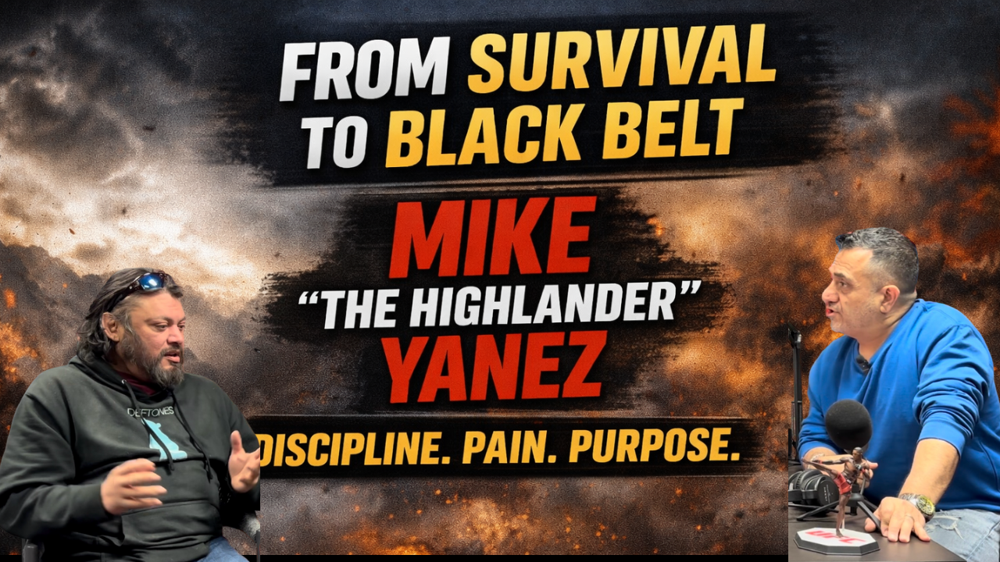
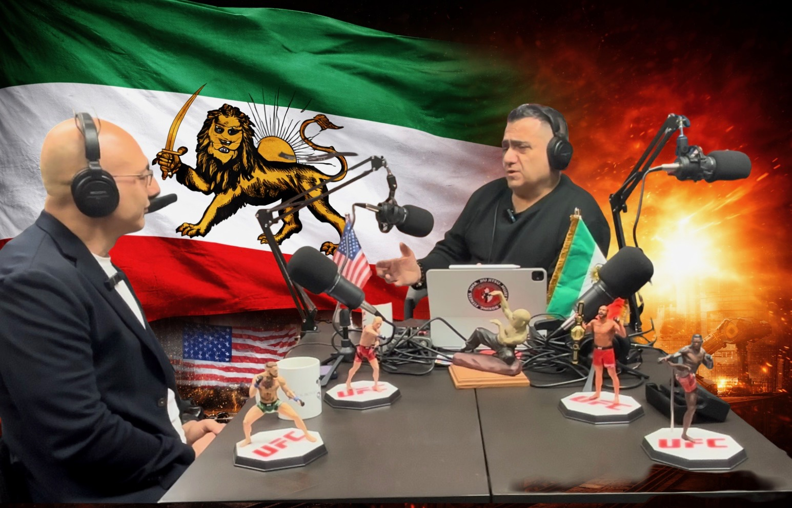
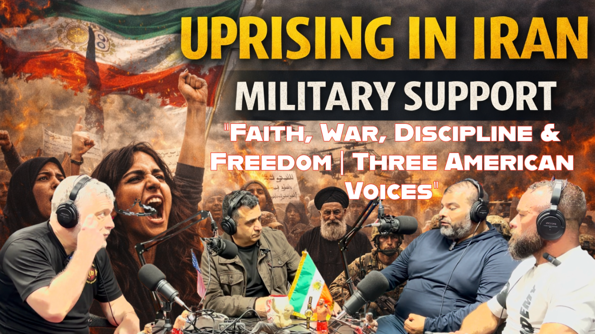
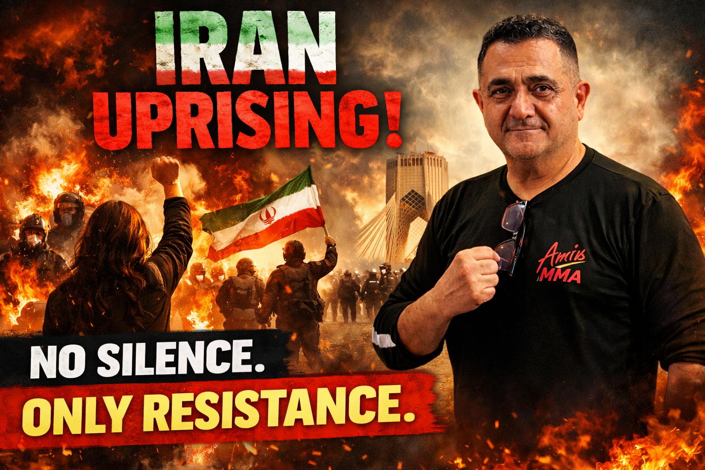
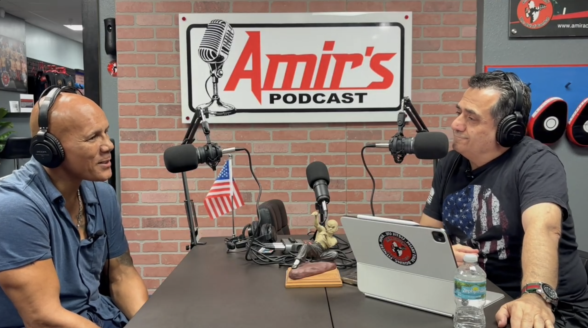
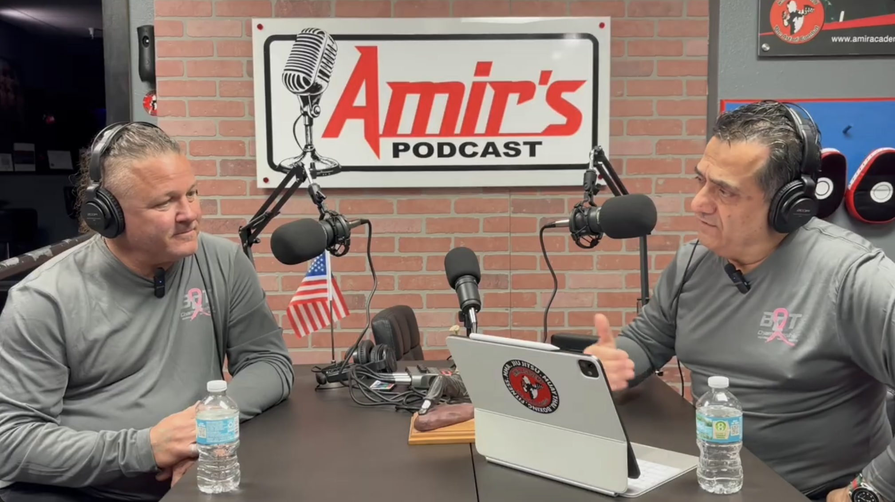
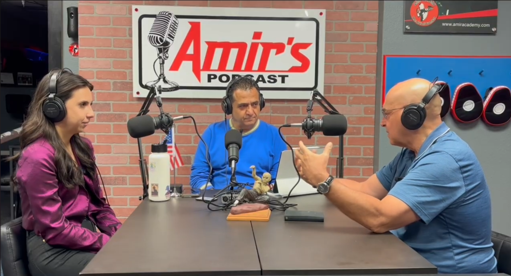
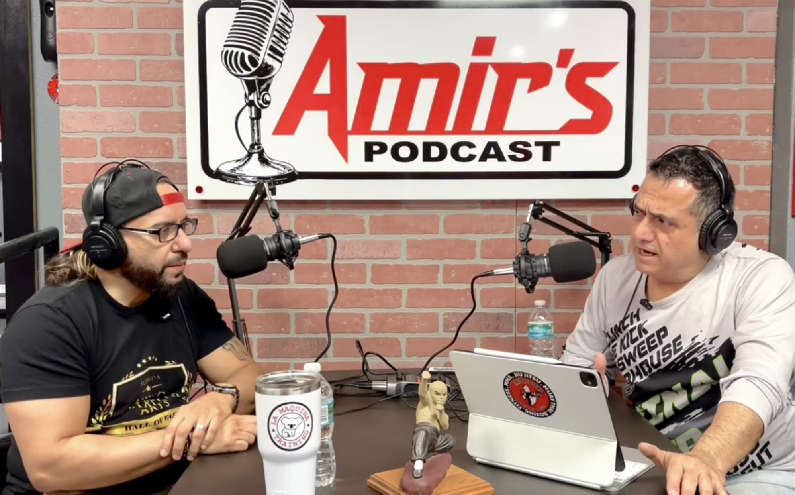

All Episodes

I Don’t Belong to the Left or the Right… I Belong to the Truth
Why does independent thinking make people so angry? Amir explains why he refuses to blindly follow any political party, why legal immigrants are just as American as anyone else, and why principles should always come before politics.
Watch on YouTube →
The Most Dangerous People Aren’t Evil… They’re Stupid
Can ignorance destroy a nation faster than evil? Amir shares why poor judgment, blind ideology, and leaders who ignore consequences can become society’s greatest threat.
Watch on YouTube →
J.D. Vance Just Insulted 92 Million Iranians… and the World Stayed Silent
Did J.D. Vance confuse the Iranian people with the Islamic Republic? Amir explains why millions of Iranians are outraged, why the Iranian people are the first victims of the regime, and why world leaders must learn the difference between a terrorist government and an oppressed nation.
Watch on YouTube →
Trump Betrayed the Iranian People? Bombs, Broken Promises & a Failed Strategy
A personal perspective on the latest U.S. actions in Iran — why military strikes without supporting the Iranian people fall short, and why any agreement with the current regime is a mistake.
Watch on YouTube →
Who Sold Out Iran?
The media is celebrating. Politicians are declaring victory. But who paid the highest price? For years, young Iranians risked everything for freedom — and millions are left wondering whether their sacrifice meant anything at all.
Watch on YouTube →
Modern Istanbul: Freedom or Illusion?
Amir traveled to Istanbul expecting history, culture, and incredible food — and found all of it. But underneath the beauty: political tension, propaganda, fear, and a side of modern Turkey most tourists never see.
Watch on YouTube →
No More “IFs”
For 47 years the world has watched the Iranian regime spread fear and destruction while politicians from both parties made promises they never delivered. What happens if this regime survives again?
Watch on YouTube →
The Truth About Iran: What the Media Won’t Tell You
The war with Iran is not just another headline — it’s about millions of lives, decades of oppression, and the future of an ancient civilization. An Iranian-American refuses to stay silent.
Watch on YouTube →
Celebrities Suddenly Care About Iran? Here’s the Truth
For decades the Iranian people suffered while much of Hollywood stayed silent. Now suddenly everyone wants to speak about Iran. Real courage means consistency.
Watch on YouTube →
USA vs England: World Title Showdown
Coach Mike Crossland, world title challenger Sonny Grevis, and his father Neil join the podcast before the World Kickboxing Championship at Battle of Tampa Bay 29. Respect, confidence, family, sacrifice — and war inside the ring.
Watch on YouTube →
Wake Up, America: United We Stand or Divided We Fall
A powerful message from an Iranian-American perspective: internal division is one of the greatest threats to freedom. America does not need another tragedy to remember its strength.
Watch on YouTube →
Labels Don’t Scare Me. Truth Doesn’t Need Permission.
When people can’t defeat your ideas, they attack your character. This is about challenging extremism, rejecting oppression, and refusing to be silenced by labels.
Watch on YouTube →
No Fear. No Filter. — The Truth About Islam
A direct and honest look at Islam — separating faith from politics, people from power, and belief from ideology. This is not about hate. It’s about truth, discussion, and the real-world impact of ideas.
Watch on YouTube →
You Can’t Negotiate With This Regime — Wake Up
From the myth of negotiation to the meaning behind the two flags on Amir’s table — a message about identity, accountability, and not looking away from what matters.
Watch on YouTube →
I Lived It — You Just Talk About It: The Truth About Iran They Won’t Say
A raw and unapologetic message calling out media personalities and so-called “experts” who speak on Iran without ever living its reality. The difference between theory and experience. Between privilege and understanding.
Watch on YouTube →
Talk All You Want… the Truth Shows in the Ring
Say whatever you want — the truth shows when the gloves go on.
Watch on YouTube →
DJ Fresh Steps Into the Ring — for a Cause
Amir sits down with Doug “DJ Fresh” Hensel as he prepares for Battle of Tampa Bay 29, joined by Buccaneers legend Mike Alstott. Beyond fighting — heart, purpose, and raising money for a veteran family in need.
Watch on YouTube →
Not Left. Not Right.
Amir speaks openly about Iran, America, truth, and the danger of blind political loyalty. Not about parties or politicians — about human dignity, freedom, and standing with the Iranian people without apology.
Watch on YouTube →
You Ignore Iran — Reality Will Shock You
This is not about Trump. Take politics out of it. This is about national security — and American lives that have already been lost. If you reduce this to politics, you’re already thinking wrong.
Watch on YouTube →
Battle of Values: Confronting Megyn Kelly (No Filter)
No filter, no script — watch the full conversation on YouTube.
Watch on YouTube →
War Is Ugly… but Necessary: The Truth About Iran No One Wants to Say
War is never good — but sometimes it becomes unavoidable. Speaking from experience, not politics: 47 years of fueled violence, suppressed people, and rejected diplomacy. This is about reality, history, and the fight for freedom.
Watch on YouTube →
Not Just Al Bundy: The Warrior Mind of Ed O’Neill — Part 2
What does it take to stay at the top — in Hollywood and on the mat? Legendary actor and BJJ black belt Ed O’Neill opens up like never before about discipline, ego, and what it really means to be a warrior.
Watch on YouTube →
Not Just Al Bundy: The Warrior Mind of Ed O’Neill
From fame and fortune to the grind of jiu-jitsu — a raw, real conversation with Ed O’Neill. This is not the Ed O’Neill you think you know.
Watch on YouTube →
Tucker Carlson Doesn’t Get Iran
What happens when political commentators talk about countries they’ve never lived in? Born and raised in Iran, Amir speaks from firsthand experience about life under the Ayatollah regime — and why dismissing that reality is dangerous.
Watch on YouTube →
Persia, Iran, and the Internet’s 3-Second History Experts
Iran is the name of a country. Persian is an ethnic and cultural identity going back more than 2,500 years — to Cyrus the Great, Darius, and Xerxes. Not politics — history, culture, and correcting misinformation.
Watch on YouTube →
If Everyone Changes America… Is It Still America?
Is America still a melting pot, or is the idea changing? Immigration, assimilation, and the importance of respecting the culture and values of the country that welcomes you.
Watch on YouTube →
47 Years of Tyranny: The Truth About Iran
The reality of Iran, the suffering of its people under 47 years of dictatorship, and why the world continues to misunderstand the difference between the Iranian people and the regime that rules them.
Watch on YouTube →
Wake Up America: Understanding the War With Iran
As an Iranian-American who has lived in both worlds, Amir explains the difference between the Iranian people and the Iranian regime — history, truth, and the real conflict.
Watch on YouTube →
There Is a Difference Between Iran and Its Government
After 1979, many innocent Iranian-Americans faced backlash for actions they had nothing to do with. History should not repeat itself. A message to Amir’s American friends.
Watch on YouTube →This Is Not a Protest — This Is a Revolution
A message of conviction, resilience, and the unbreakable spirit of a people who refuse to be silenced. Freedom, sacrifice, leadership, and the responsibility of every generation to stand for dignity and justice.
View Episode →
From Survival to Black Belt: Mike “The Highlander” Yanez on Discipline, Pain & Purpose
A five-stripe black belt under the legendary Popovitch lineage, Mike Yanez is a survivor, a builder, and a man forged through discipline and sacrifice. What discipline really means when life gets hard.
View Episode →
From Iranian Revolution to American Manufacturing: Kam Behjati on Freedom, Work & AI
Kam Behjati witnessed the 1979 revolution firsthand. Today he’s a driving force behind US Door & More — fully automated, AI-powered, 100% Made in America. Immigration, entrepreneurship, and long-term vision.
View Episode →American Dream
Morteza Homayoun came to the United States in 2001 with nothing but ambition and technical skill. Today he’s the founder of FlightLogic, modernizing aircraft maintenance with AI. A real blueprint for entrepreneurship.
View Episode →
Faith, War, Discipline & Freedom: Three American Voices
A U.S. Army veteran, a military contractor, and a lifelong martial artist. One Jewish, one Christian, one Catholic. Three belief systems, one real conversation about war, peace, freedom, and responsibility.
View Episode →
Consistency Is Resistance: Iran Will Not Be Silenced
A direct and uncompromising conversation about the Iranian uprising, the cost of silence, and why consistency is resistance. This episode stands with the Iranian people.
View Episode →Leadership Under Fire: Truth From a Federal SWAT Commander
A conversation with a former Homeland Security Investigations Federal Agent and SWAT Team Leader. Discipline, responsibility, ethics, and leadership when the stakes are real.
View Episode →
The Mindset of a Champion: Orlando Rivera on Discipline, Humility & Success
A 5-time World Champion Kickboxer, Professional Boxer, and Martial Arts Hall of Famer who shared the screen with Chuck Norris. From humble beginnings to world titles — resilience, respect, and relentless drive.
View Episode →
Discipline, Power, and Purpose: Erik Marshall’s Story
Champion fighter, respected coach, and event promoter Erik Marshall dives into the world of martial arts, discipline, and what it truly means to stay hungry for greatness.
View Episode →
From the Battlefield to Healing: Dr. Alex & Olivera Petrovich
A remarkable father-daughter duo from the Amir Academy family. From the battlefield to the pharmacy, from mental health counseling to martial arts — service, healing, and resilience across generations.
View Episode →
From Fighter to Founder: Rafael Garcia’s Journey with American Top Team Tampa
Rafael Garcia’s journey from fighter to founder, building American Top Team Tampa through passion, discipline, and real-world grit. Fights, fitness, and real talk — unfiltered.
View Episode →No episodes match that search.